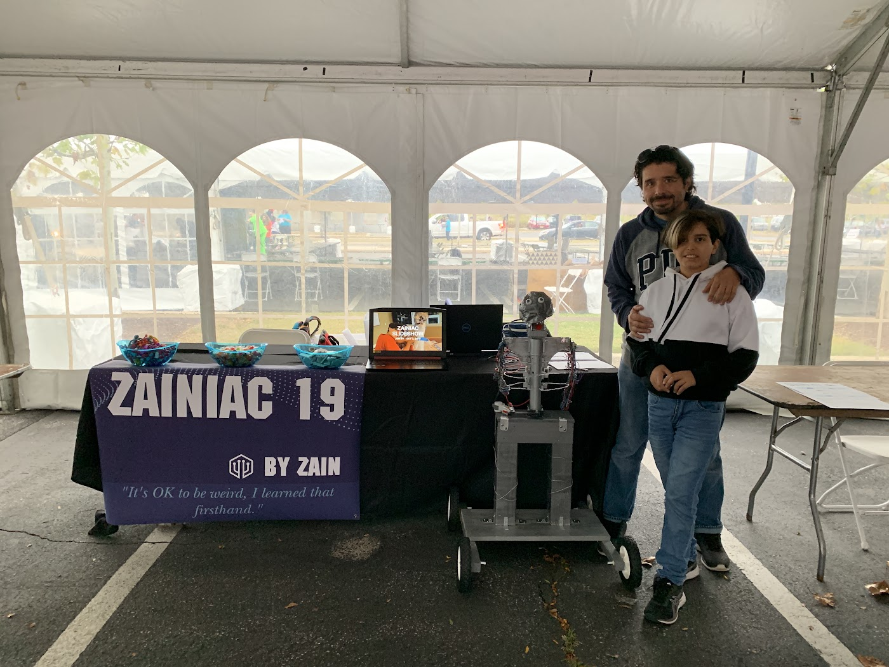

From COVID-19 to Zainiac 19
How an obsession sparked by Five Nights at Freddy's led to four months of Saturday morning robotics lessons, building Zainiac 19 (a five-foot humanoid made of 3D-printed parts, wood, and wiring), presenting across international Maker Faires in Philadelphia, Rochester, Brussels (featured on Belgian national broadcast TV), and Cairo (a 15,000-person gathering)—and how pandemic shutdowns abruptly halted Zainiac 20 while fueling the resilience behind Zainiac 21.
For anyone who is passionate about something, there's always a beginning. For some, it's reading a book that encourages you to write or a hobby that convinces you to enter a competition. For me, it was a video game called Five Nights at Freddy's that inspired me to build my own robot, Zainiac 19.
At first it was just an idea, a random thought — but there came a point where I was thinking about building a robot nonstop. Every Saturday morning, I would get up early to meet with a robotics coach. He taught me everything about robotics and after four months of lessons, I had a robot.

He had a terminator-esque look to him, not as scary but still a little creepy, which is what I was going for. He had 3D printed pieces that I designed, wood as the base for his body and metal wire along his arms and torso to make him look more like what I envisioned going through this project. After I finished the final details, I went to my first Maker Faire (a place where “makers” get together and present something they built) in Philadelphia.
Then followed more. The faire in Rochester was amazing and I met so many nice people there! Zainiac 19 and I were on television in Belgium! The Maker Faire in Egypt had a concert and dance party for all the makers at the end of the night attended by about 15,000 people!

After all of the events with Zainiac 19, I realized that he had some areas for enhancement which is when I decided, I wanted to make a new and improved robot. The idea for Zainiac 20 was born in late 2019.
When I started design in early 2020, I was ready to face a new challenge. The robot that I spent so long building and designing was getting a brother, so to speak. I met with my robotics coach and we devised a plan. I wanted to use advanced coding, motors and materials. This robot would be faster, smarter, and more feature-rich with a brand new, innovative robotic look. He would also be easier to disassemble and transport whether it be out of town, state or the country. Taking apart Zainiac 19 and putting him back together at the events, only to find that a piece broke, was starting to take a toll on my mental health.
Three months into working on Zainiac 20, he was looking pretty good. He was rolling around, picking things up and bringing them back to me, talking and learning new dances.
Within five months, we were ready to hit the road. Zainiac 20 and I headed to Japan! After that, we hit three more countries before heading home. Throughout our travels, Zainiac 20 and I won awards, got interviewed on the news and met great, new people.
“But... due to COVID-19, Zainiac 20 never actually existed.”
You see, because of COVID-19, everything was shut down or put on hold. COVID-19 had its effect on everyone (some worse than others) but for me it was destroying my dream. Instead, what I did that entire summer was sit on my couch playing video games and feeling bad for myself. It felt like hiking up a snowy mountain. Just when you're about to get to the top, an avalanche sends you all the way back down.
Even though Zainiac 20 never came to be, that doesn't mean the Zainiac © lineup of robots is over. In fact, it's just the beginning.
Sincerely,
Zainiac 21